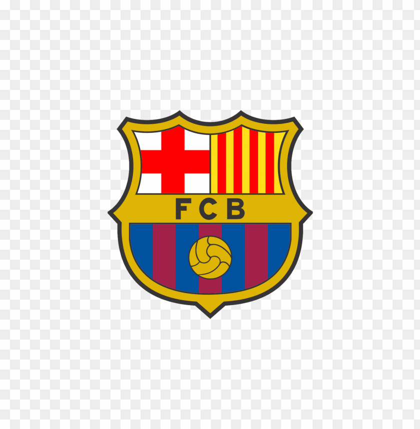
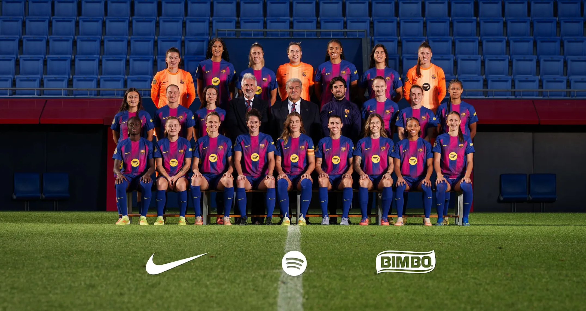

This squad is currently ranked 1st in the Spanish Female League, Liga F.Barcelona has the most championship titles(10) out of all 16 participating clubs in Liga F, and holds the most recent title for the 2024-25 season.